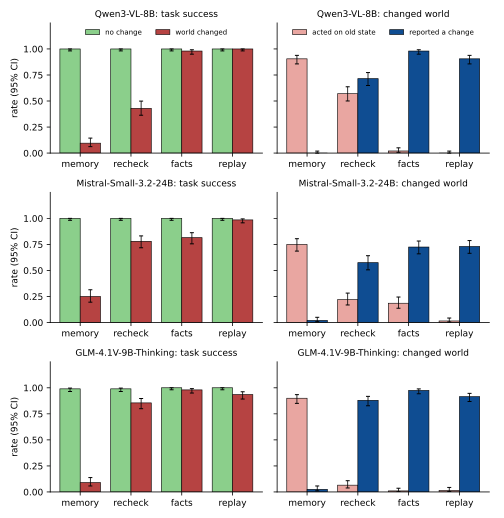

Does a robot agent notice that the warehouse changed?
An agent looks at the floor at 09:00 and acts at 09:20. If an aisle was blocked or a crate was moved in between, does it notice, or does it follow its old view?
Episode 1, Habitat-Sim. Decisions are Qwen3-VL-8B's actual replies; routes come from Habitat's navmesh planner. The moving robot only visualizes the chosen route.
Each rate is over 200 episodes; 95% Wilson intervals are in the figure below.
Results

| Acted on the old layout (changed world) | Qwen3-VL-8B | Mistral-Small-3.2-24B | GLM-4.1V-9B-Thinking |
|---|---|---|---|
| Memory only (may ask for a new image) | 90.5% | 75.0% | 90.0% |
| Recheck (fresh image, told to check) | 57.0% | 22.0% | 6.5% |
| Facts (asked separately; the model compares) | 2.0% | 18.5% | 1.0% |
| Replay check (code compares) | 0.0% | 1.5% | 1.5% |
Working from memory, the agents asked for a new image in 0%, 5.0% and 2.5% of episodes. With nothing changed, task success was 99–100% for every model and procedure.
Setup
- Scene. A procedurally built warehouse in Habitat-Sim: four numbered bays, three colored crates, two aisles between shelving racks, and an overview camera above the loading dock.
- Episode. At 09:00 the agent sees the floor and writes notes. At 09:20 it must bring a crate to the dock and answers with a bay, an aisle, and whether the world changed. Each of 200 episodes has an unchanged version and a changed one: half move the target crate, half block the aisle on its side.
- Procedures. Memory: no new image unless the agent asks for one. Recheck: a fresh image and an instruction to check. Facts: plan from memory, then ask in a fresh chat which bay holds the crate and which aisles are clear; the agent compares. Replay check: same plan and facts, but code compares them with the plan and tells the agent only about contradictions.
- Models. Qwen3-VL-8B-Instruct, Mistral-Small-3.2-24B-Instruct (FP8) and GLM-4.1V-9B-Thinking, three open models from different families, greedy decoding with vLLM.
- Scoring. Success means the chosen bay holds the crate now and the chosen aisle is passable now, as decided by Habitat's navmesh planner.
What the ablation says
Where the gain comes from depends on the model. For Qwen and GLM, asking the facts in a separate chat is enough. Mistral needs the code comparison: told that the crate had moved, it still went to the old bay in 34 of 100 such episodes, usually in the same reply that said the world had changed. Only the replay check kept all three models at or below 1.5% stale actions.
Limitations
- This is a preliminary simulation study of a VLM decision task. The agent only picks a bay and an aisle; the navmesh decides whether the route is passable. There is no robot control and no real robot.
- One procedurally built scene with a fixed camera and high-contrast objects; three models.
- Perception errors differ by model: Mistral called an aisle blocked in 137 of 200 notes at 09:00 when none was; GLM gave no answer in 32 of 1,600 final replies (counted as failures).
- Reruns are close but not bit-identical: 391–400 of 400 final actions per cell matched an earlier run.
Code
Scene, agents, scoring and this animation, with a one-command reproduction: README.